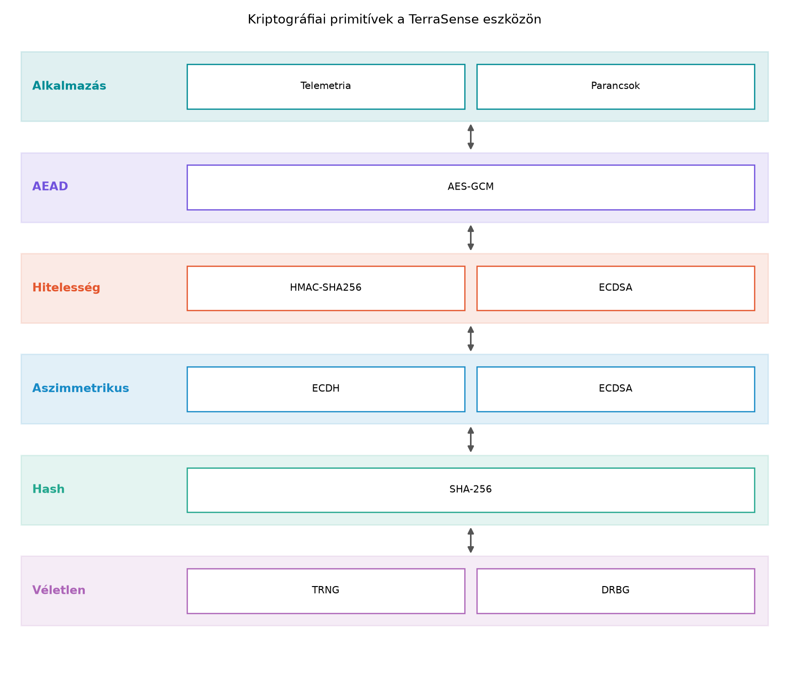

A TerraSense rendszerben a ts-node eszközök telemetriát küldenek a ts-gw gateway-nek, amely aztán MQTT-n továbbítja a backend felé; a backend parancsokat küld lefelé. Ha a kommunikációs csatornát nem védjük, egy támadó hamis hőmérséklet-adatokat szúrhat be, módosíthatja a parancsokat (például kinyithatja az öntözőszelepet), vagy lehallgathatja az üzemeltetési adatokat. A(z) Fenyegetésmodellezés: támadási felület és STRIDE alfejezetben azonosítottuk ezeket a fenyegetéseket. A kriptográfia nem öncélú bonyolultság, hanem a biztonsági követelmények (bizalmasság, integritás, hitelesség) elérésének eszköze. Fejlesztőként a primitíveket a megfelelő helyen, a megfelelő módon kell használnunk, mert a rossz választás több kárt okozhat, mint a kriptográfia hiánya.
A következőkben a TerraSense eszközön futtatható, korlátozott erőforrású környezethez illeszkedő építőelemeket tekintjük át.
A kriptográfia négy alapvető védelmi célja a következő:
Ezen célok elérésére különböző kriptográfiai primitíveket használunk. A primitívek alapszintű algoritmusok vagy protokollok, amelyek egy-egy biztonsági tulajdonságot nyújtanak. A megfelelő primitív kiválasztása a fenyegetésmodelltől, az erőforráskorlátoktól és a kulcsmenedzsment lehetőségeitől függ.

A szimmetrikus titkosítás ugyanazt a kulcsot használja a titkosításhoz és a visszafejtéshez. Az Advanced Encryption Standard (AES) a leggyakoribb blokkrejtjel; 128 bites blokkokat titkosít 128, 192 vagy 256 bites kulccsal. A blokkrejtjel önmagában csak fix méretű blokkot tud kezelni, ezért üzemmódra van szükség a hosszabb üzenetekhez. Az Electronic Codebook (ECB) üzemmód – amely minden blokkot azonos módon titkosít – tilos, mert az azonos plaintext blokkok azonos ciphertext blokkokat eredményeznek, ami mintázatot szivárogtat. A gyakorlatban a Galois/Counter Mode (GCM) az ajánlott választás.
Definíció. AEAD (Authenticated Encryption with Associated Data): olyan titkosítási mód, amely egy műveletben biztosít bizalmasságot és integritást, valamint hitelesíti a titkosított adat mellett a kísérő (associated) adatokat is. Az AEAD bemenete a kulcs, a nonce (egyszer használatos szám), a plaintext és opcionálisan a titkosítandó fejléc; kimenete a ciphertext és az authentication tag. Az AES-GCM ennek egy konkrét, széles körben használt példája.
Az AES-GCM biztonságának kritikus feltétele, hogy ugyanazt a nonce-t soha ne használjuk fel kétszer ugyanazzal a kulccsal. A nonce nem titkos, de egyedi kell legyen minden üzenethez. Ha újra felhasználjuk, a támadó visszafejtheti az üzeneteket, és hamis hitelesítést is produkálhat. A nonce-kezelést gyakran számlálóval vagy biztonságos véletlenszámmal oldjuk meg.
Definíció. A hash függvény tetszőleges hosszúságú bemenetből fix hosszúságú, gyakorlatilag egyedi kimenetet (digest) állít elő. Az SHA-256 256 bites kimenetet ad. A hash egyirányú (nem lehet visszafejteni) és gyakorlatilag ütközésálló (nem találunk két különböző bemenetet azonos kimenettel). A hash önmagában nem nyújt integritást, mert a támadó módosíthatja az adatot, és újra kiszámíthatja a hash-t.
Definíció. Az HMAC (Hash-based Message Authentication Code) egy titkos kulccsal kiegészített hash, amely hitelesített integritást nyújt. A számítás során a kulcsot a hash belsejébe és kívülre is belekeverjük, így aki nem ismeri a kulcsot, nem tud érvényes kódot generálni. Az HMAC-SHA256 az SHA-256-ot használja alapként, és az IoT-ban a leggyakoribb megosztott kulcsú hitelesítési primitív.
Az HMAC alkalmas arra, hogy a ts-node és a ts-gw között – ha megosztott kulccsal rendelkeznek – ellenőrizzük, hogy a telemetriai üzenet nem módosult, és valóban az adott eszköztől származik. A megosztott kulcsos hitelesítés hátránya, hogy a kulcsot mindkét oldalon tárolni kell, és kompromittálódása esetén nehéz a cseréje.
Az aszimmetrikus kriptográfia kulcspárt használ: a privát kulcs titkos, a publikus kulcs bárki számára hozzáférhető. A publikus kulccsal titkosíthatunk vagy ellenőrizhetünk, a privát kulccsal visszafejthetünk vagy aláírhatunk. Az RSA a legismertebb, de nagy kulcsot igényel (2048–4096 bit), ami korlátos eszközön lassú és memóriaigényes. Az elliptikus görbéken alapuló ECC (Elliptic Curve Cryptography) lényegesen kisebb kulcsokkal azonos biztonsági szintet nyújt.
| Biztonsági szint (bit) | RSA kulcsméret (bit) | ECC kulcsméret (bit) |
|---|---|---|
| 128 | 3072 | 256 |
| 192 | 7680 | 384 |
| 256 | 15360 | 521 |
Megjegyzés: a táblázat a NIST SP 800-57 ajánlásain alapuló illusztratív értékeket tartalmaz; a konkrét alkalmazás előtt ellenőrizze az aktuális ajánlást.
Az ECC két alapvető műveletét használjuk: az ECDH (Elliptic Curve Diffie-Hellman) kulcscserét, amellyel két fél közös titkot tud létrehozni a nyilvános csatornán keresztül, és az ECDSA (Elliptic Curve Digital Signature Algorithm) digitális aláírást, amely a privát kulccsal igazolja az üzenet eredetét. A kis kulcsméret miatt az ECC ideális a ts-node eszközön: kevesebb flash-, RAM- és CPU-igény, gyorsabb működés, kisebb tanúsítványméret.
Minden kriptográfiai kulcs, nonce és aláírás biztonsága azon múlik,
hogy a véletlen számok valóban kiszámíthatatlanok-e.
TRNG (True Random Number Generator) fizikai
zajforrásból (pl. hőzaj, oszcillátor jitter) származtat entrópiát.
DRBG (Deterministic Random Bit Generator) egy
determinisztikus algoritmus, amely a bemeneti entrópiáből (seed) nagy
mennyiségű, kriptográfiailag álvéletlen számot állít elő. A Zephyr
operációs rendszer biztosít entrópia API-t és platformfüggő TRNG-t, de a
pontos konfiguráció (pl. CONFIG_TEST_RANDOM_GENERATOR vagy
CONFIG_ENTROPY_DEVICE) verziófüggő, ezért ellenőrizni kell.
Az eszközön a boot után elegendő entrópiát kell gyűjteni, mielőtt
kulcsot generálunk vagy nonce-ot használunk; egy determinisztikus
seed-et ismerő támadó minden utána következő értéket megjósolhat.
A Zephyr ökoszisztémában az mbedTLS a leggyakrabban
használt kriptográfiai könyvtár, amely C nyelven implementál
primitíveket. Újabb fejlesztéseknél a PSA Crypto API az
ajánlott interfész, amely egységes, hordozható réteget biztosít, és
hardvergyorsítást is képes kihasználni. A pontos függvénynevek (pl.
psa_aead_encrypt, psa_generate_random,
psa_sign_hash) ellenőrzési igényt jelentenek, mert a Zephyr
verziótól és a konfigurációtól függően eltérhetnek. A fejezet későbbi
részei ezt az API-t fogják használni.
Továbbvitt eredmény. Az itt bemutatott AES-GCM-et, HMAC-ot, ECDSA-t, ECDH-t és a biztonságos véletlenszám-generálást használja az Eszközidentitás: X.509-tanúsítványok, PKI és kulcstárolás alfejezet tanúsítványokhoz, a Biztonságos kapcsolat: TLS 1.3, mTLS és DTLS az MQTT/CoAP alatt alfejezet a TLS/DTLS kézfogáshoz és rekordtikosításhoz, valamint a Biztonságos boot és firmware-aláírás alfejezet a firmware-hitelesítéshez. A fogalmak és a választási szempontok megalapozzák ezeket a későbbi alkalmazásokat.
A TerraSense-ben a primitívek kiválasztásakor a következő kérdéseket tesszük fel:
A döntési táblázat:
| Cél | Ajánlott primitív | Megjegyzés |
|---|---|---|
| Bizalmasság és integritás együtt | AES-GCM | AEAD, mindig ezt válasszuk, ha titkosítunk |
| Integritás, megosztott kulcsos hitelesség | HMAC-SHA256 | Kulcsot mindkét oldalon tárolni kell |
| Integritás, publikus ellenőrzés | ECDSA | Digitális aláírás, privát kulcs az aláíró oldalán |
| Kulcscsere | ECDH | Közös titok létrehozása nyilvános csatornán |
| Hash (pl. ujjlenyomat, séma) | SHA-256 | Nem hitelesítésre önmagában |
| Véletlen szám, nonce | TRNG + DRBG | A nonce egyediségét biztosítani kell |
Tegyük fel, hogy a ts-node a következő, kissé egyszerűsített telemetriai JSON-t küldi (a valós sémában több mező van, de az elv ugyanaz):
{"n":"n001","t":22.5,"h":55.0,"s":30.0}A karakterlánc hossza 35 bájt (illusztratív, nullterminátor nélkül). Ha ezt AES-128-GCM-mel titkosítjuk, a következő elemeket kapjuk:
A teljes hálózaton elküldött adat:
Az overhead:
Ez 97% méretnövekedés a titkosítás miatt. A példa jól mutatja, hogy kis üzeneteknél a nonce és a tag aránya jelentős; ezért IoT-ban gyakran érdemes kompaktabb kódolást (pl. CBOR, SenML) választani, és az AEAD overhead-jét a tervezéskor figyelembe venni. Ha az üzenet 200 bájt lenne, az overhead már csak 17%, így a hatás kisebb. Az AES-GCM robusztussága és egyszerűsége miatt a tipikus IoT-forgalomnál még így is az ajánlott választás, de a rövid üzeneteknél a nonce-menedzsment és a tag mérete a mérnöki döntés része.
Előfeltétel: OpenSSL telepítve az Ubuntu 24.04 hoston (alaprendszerben elérhető). A labor célja a primitívek gyakorlati kézbevétele, nem éles kulcsok létrehozása.
Munkakönyvtár:
mkdir -p ~/iot-labor/i055 && cd ~/iot-labor/i055Generáljunk egy labor-AES-kulcsot és számoljunk HMAC-ot:
# Labor-AES-kulcs generálása (csak demonstrációra; éles rendszerben HSM-et vagy TRNG-t használjunk)
openssl rand -hex 16 > lab-aes-key.hex
# SHA-256 hash egy rövid üzenetre
echo -n "hello TerraSense" | openssl dgst -sha256
# HMAC-SHA256 a TerraSense telemetria topic-ra
echo -n "terrasense/gh1/n001 telemetry" | openssl dgst -sha256 \
-hmac "$(cat lab-aes-key.hex)"Várható kimenet: az első parancs 64 hex karakteres SHA-256 digest-et, a második 64 hex karakteres HMAC-ot ad. A kulcsfájl 32 hex karakter hosszú (128 bit). A hash fix hosszúságú, függetlenül a bemenet hosszától.
Ellenőrzés: ismételjük meg a HMAC parancsot ugyanazzal a kulccsal és üzenettel – azonos kimenetet kapunk. Módosítsuk az üzenetet (pl. egy karaktert), és a HMAC teljesen megváltozik. A kulcs nélkül a támadó nem tud érvényes HMAC-ot előállítani.
| Tünet | Ok | Javítás |
|---|---|---|
| A HMAC nem egyezik a várt értékkel | A kulcs vagy az üzenet eltér (pl. szóköz, sortörés) | Ellenőrizze a kulcsfájlt, használja ugyanazt a
echo -n-et |
| Az AES-GCM visszafejtés sikertelen (authentication failure) | A ciphertext, a tag vagy a nonce módosult; vagy rossz kulcs | Ellenőrizze a nonce egyediségét és a kulcsot |
A Zephyr alkalmazásban psa_aead_decrypt hibát ad |
A nonce újra fel lett használva, vagy a tag nem megfelelő | Győződjön meg róla, hogy a nonce számláló perzisztensen növekszik |
| A generált kulcs gyenge (pl. determinisztikus) | Nem megfelelő entrópiaforrás, rossz seed | Kapcsolja be a TRNG-t a devicetree-ben, várjon elegendő entrópiát |
lab-aes-key.hex
legyen, az üzenet a tényleges TerraSense telemetriai JSON
({"node_id":"n001","seq":1,"ts":1699999999000,"temp":22.5,"rh":55.0,"soil":30.0}),
és a kimenetet mentse el egy lab-telemetry.mac fájlba.
Ellenőrizze, hogy a fájl 64 hex karaktert tartalmaz.echo -n "{\"node_id\":\"n001\",\"seq\":1,\"ts\":1699999999000,\"temp\":22.5,\"rh\":55.0,\"soil\":30.0}" \
| openssl dgst -sha256 -hmac "$(cat lab-aes-key.hex)" > lab-telemetry.mac
wc -c lab-telemetry.mac # 64 karakter + újsorA wc -c 65-öt mutat a záró újsor miatt; a hex karakterek
száma 64.
Ebben az alfejezetben áttekintettük az IoT-fejlesztő számára elengedhetetlen kriptográfiai primitíveket. A négy védelmi cél: bizalmasság, integritás, hitelesség, letagadhatatlanság. A szimmetrikus titkosításra AES-GCM (AEAD) ajánlott, mert egy műveletben titkosít és hitelesít; a nonce egyedisége kritikus. Az SHA-256 hash önmagában nem elegendő, HMAC-SHA256-ot használunk megosztott kulcsú hitelességre. Az aszimmetrikus ECC kis kulccsal azonos biztonságot ad, az ECDH kulcscsere, az ECDSA aláírás. A véletlenszám forrás TRNG és DRBG. Zephyrben az mbedTLS/PSA Crypto API az ajánlott. Továbbvitt eredmény: ezeket a primitíveket az Eszközidentitás: X.509-tanúsítványok, PKI és kulcstárolás, a Biztonságos kapcsolat: TLS 1.3, mTLS és DTLS az MQTT/CoAP alatt és a Biztonságos boot és firmware-aláírás alfejezetek alkalmazzák.
Stabil szabványok:
- NIST FIPS 197 (AES), FIPS 180-4 (SHA-256), FIPS 198-1 (HMAC), SP
800-38D (GCM), SP 800-57 (kulcsméret-ajánlások).
- RFC 8446 (TLS 1.3), RFC 9147 (DTLS 1.3), RFC 5280 (X.509) – ezek a
fejezet további részeiben kerülnek alkalmazásra.
Ellenőrzési hiányok:
- A Zephyr PSA Crypto API pontos függvénynevei, Kconfig opciók (pl.
CONFIG_PSA_CRYPTO, CONFIG_ENTROPY_DEVICE) és
az mbedTLS verziója a kiadástól függ; használat előtt ellenőrizze a
Zephyr dokumentációját.
- Az OpenSSL parancssori kimenet pontos formátuma a verziótól függhet; a
labor a gyakori elterjedt viselkedést mutatja.
- A táblázatban szereplő kulcsméretek a NIST ajánláson alapuló
illusztratív értékek, az aktuális szabványoknak való megfeleléshez
ellenőrizze a legfrissebb kiadást.